Use Case
Cloud is all about saving costs and agility. Coming to storage, AWS provides S3
(Simple Storage Service) for efficiently and cheaply storing the data. For
archiving data like database backups, AWS provides a service called Glacier
which is cheaper than S3 and is widely used for data which is older and which
is accessed very less often.
One way to move the data onto Glacier is to use the S3 Lifecycle Policies, we can specify some rules mentioning that any data which is older than 200 days moved automatically from S3 Standard to Glacier. Another way to move the data is using the AWS CLI (Command Line Interface) directly to Glacier. We will explore the same here.
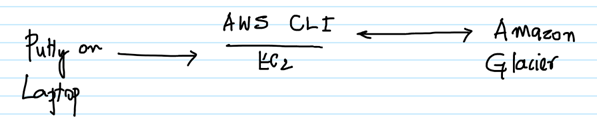
Amazon Glacier has Vaults which is a logic collection of Archives or files. First step is to create a Vault and add Archives to it. The Archives can be a single file or a zip file with a collection of files. Also, note that while deleting, first the Archive has to be deleted and then the Vault. Once an Archive has been uploaded to a Vault, it might take a maximum of 24 hours for its deletion as AWS updates the Vault inventory every 24 hours only.
AWS Services: IAM, EC2, Glacier.
-- Create an EC2 instance with the below details and connect to it via Putty.
-- Ubuntu
-- t2.micro
-- Security Group with Port 22/inbound opened
-- Once connected to the EC2, execute the below commands to install the AWS
CLI.
sudo apt-get update
sudo apt-get install python2.7 python-pip -y
pip install awscli –upgrade
export PATH="$PATH:/home/ubuntu/.local/bin/"
mkdir .aws
echo -e "[default]\nregion=us-east-1" > .aws/config
-- Create an IAM Role for EC2 called
Role4EC2-S3Permissions with the AmazonGlacierFullAccess policies and attach the
same with EC2 from the management console. This will give any application on
the EC2 including the AWS CLI the full permissions to interact with Glacier.
-- Create a file called customer.csv with some data. This is the file which we would be uploading to Amazon Glacier later. The contents of the file don’t really matter in this scenario.
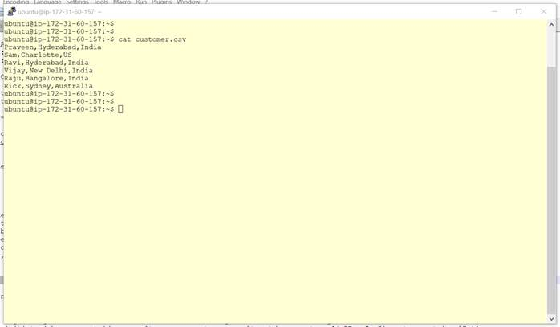
-- Execute the below command to create a vault called ‘my-customer-vault’.
aws glacier create-vault --account-id - --vault-name my-customers-vault
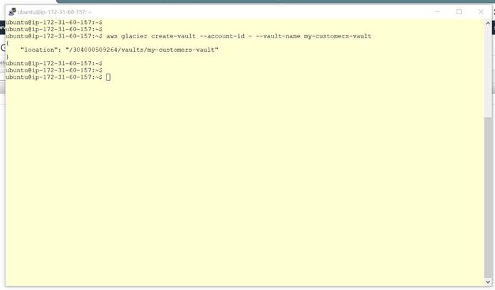
-- The created vault can be observed in the Glacier Management Console also.
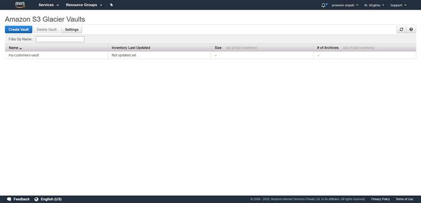
-- Click on the vault and go through the different options for the vault. There is no need to change any properties for the vault.
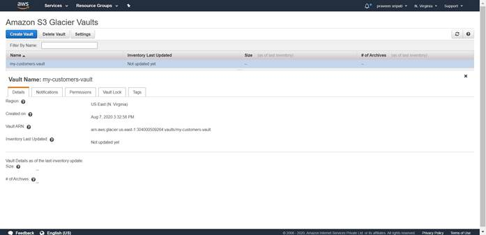
-- Execute the below command to upload the
archive called customer.csv to the vault created earlier. Note down the
archiveId, this will be used in the upcoming steps.
aws glacier upload-archive --account-id - --vault-name my-customers-vault
--body customer.csv
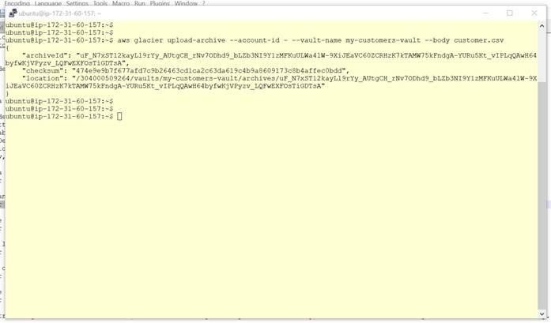
-- Execute the below command to get the list
of archives in the vault created earlier to get the list of archives. The
command runs asynchronously and a job will be submitted.
aws glacier initiate-job --account-id - --vault-name my-customers-vault
--job-parameters '{ "Type": "inventory-retrieval" }'
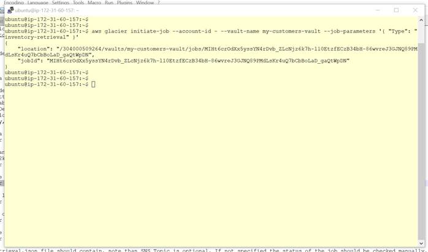
-- Get the list of jobs by executing the
below command. Note that the job to get the list of archives is in an
InProgress state. Amazon Glacier updates the inventory (list of archives in the
vault) every 24 hours, so the status of the job will in the InProgess status
for a maximum of 24 hours.
aws glacier list-jobs --account-id - --vault-name my-customers-vault
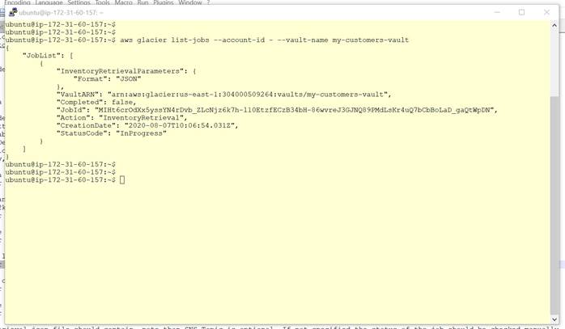
-- Create a file called archive-retrieval.json
with the below content. Make sure to replace ABCD with the archiveId got from
the output of the command while uploading the archive to the vault. Below JSON
has the inputs to the command to retrieve the archive from the vault.
{
"Type": "archive-retrieval",
"ArchiveId": "ABCD",
"Description": "Retrieve customer.csv",
"Tier": "Expedited"
}
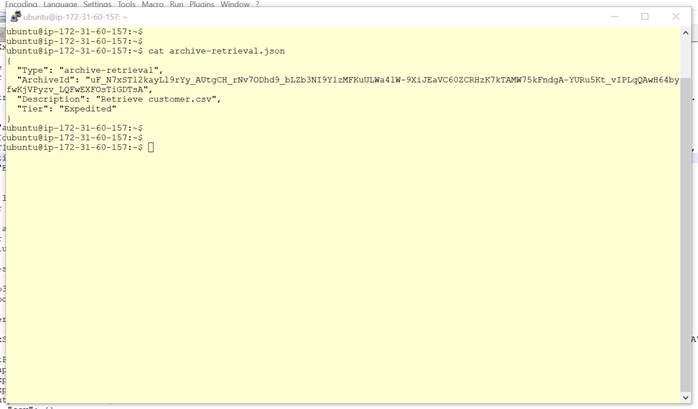
-- Execute the below command to retrieve the
archive from the file. This command runs asynchronously and a job is submitted
to Amazon Glacier.
aws glacier initiate-job --account-id - --vault-name my-customers-vault
--job-parameters file://archive-retrieval.json
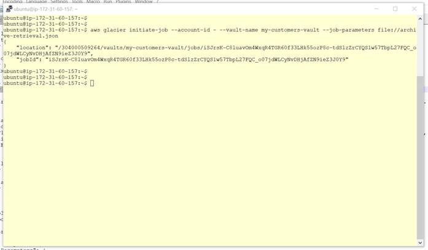
-- Note that expedited retrieval is being used and it will take between 1 and 5
minutes to retrieve the file. With the expedited retrieval sometimes, we do get
the below exception and there is no guarantee that the command will run
successfully. To make sure that expedited retrievals work every time, we need
to buy provisioned
capacity. But, a single provisioned capacity
costs about 100$ a month as of this writing and so this step is skipped.
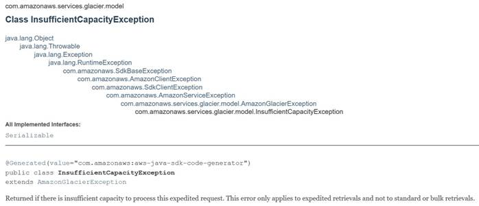
-- Execute the below command to get the
status of job which we ran earlier. Initially it would be in a pending state
and in about 5 minutes, the status of the job will be changed to Succeeded as
shown below. This means that the file is ready to be retrieved. Make sure to
note down the JobId, the same is to be used for retrieving the file later.
aws glacier list-jobs --account-id - --vault-name my-customers-vault
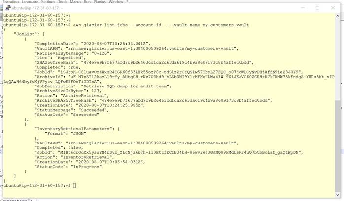
-- Execute the below command to retrieve the file from Glacier. Make sure to replace ABCD with the job id which we got from the previous step. Also, the file which we are trying to retrieve will be named as customer-from-glacier.csv the last parameter of the command.
aws glacier get-job-output --account-id - --vault-name my-customers-vault --job-id "ABCD" customer-from-glacier.csv
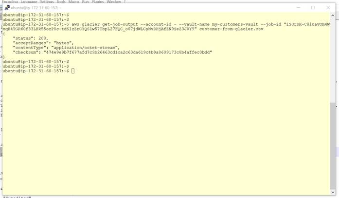
-- Execute the ls command to get the list of files. customer.csv is the file which has been uploaded to Glacier and customer-from-glacier.csv is the file which has been downloaded from Glacier. Run the below command to see the difference between the two files. The command doesn’t return anything, it means that what we uploaded is what we got from Glacier.
diff customer.csv customer-from-glacier.csv
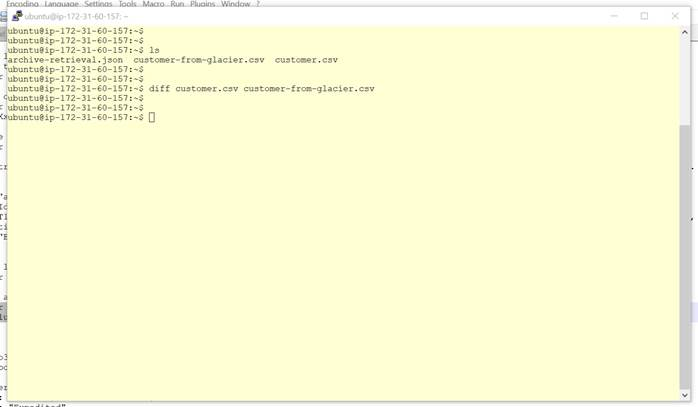
-- Before deleting the vault, the archive
must be deleted. Below is the command to delete the archive. Make sure to
replace the archive-id ABCD with what has been got from the earlier command.
aws glacier delete-archive \
--account-id - \
--vault-name my-customers-vault \
--archive-id ABCD
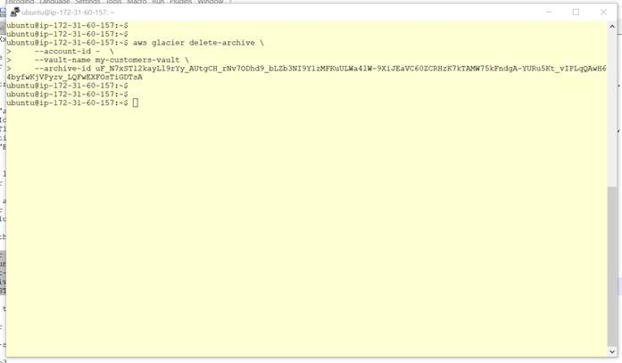
-- Execute the below command to get the
status of job which we ran earlier. It would take a couple of hours for the
status of both the jobs to be in a succeeded state. Wait for Succeeded state for
both the jobs before proceeding to the next step.
aws glacier list-jobs --account-id - --vault-name my-customers-vault
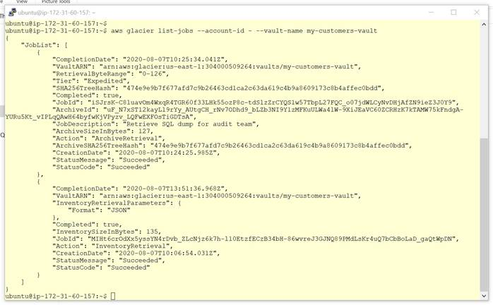
-- Delete the vault using the below command. If the vault has any archives, it cannot be deleted and an error would be shown as below.
aws glacier delete-vault --vault-name my-customers-vault --account-id -
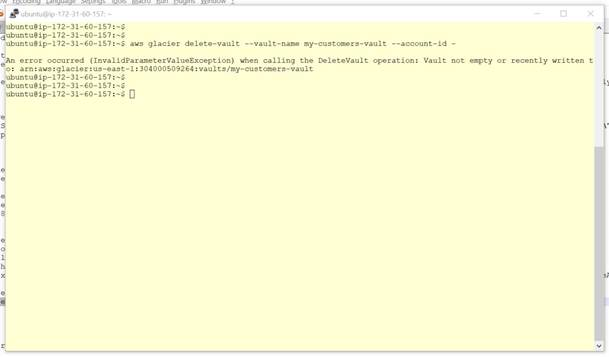
-- If the vault has been deleted successfully, then there should be no error messages as shown below.
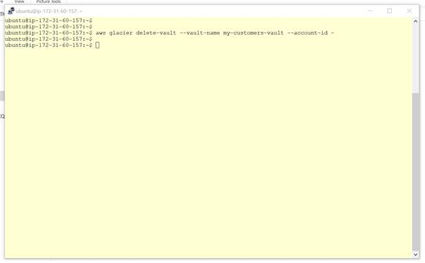
-- Execute the below command to get the list of vaults in the current AWS account. The list should be empty if the vault has been deleted successfully.
aws glacier list-vaults --account-id -
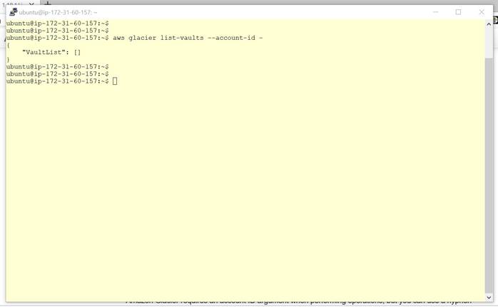
-- From the Glacier Management Console also, we can verify that the vault has been deleted successfully as it shows the welcome screen and not the vault created earlier.
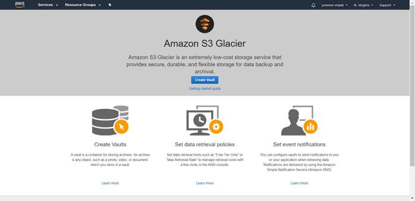